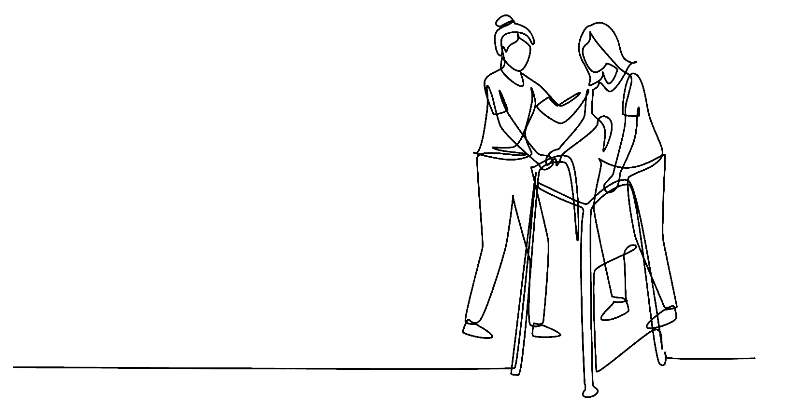

Care Worth
Reading About
Practical guides, local know-how and honest advice for people living with disability in Perth — and the people who love them.

Choosing the Right Support Worker in Perth: What Really Matters
The right support worker becomes part of your daily rhythm. Here is how to find someone who fits your life, not just your roster.
Read article Care & SupportUnderstanding Spinal Cord Injury Support Needs: A Guide for Families
Spinal cord injury affects every family differently. This guide explains the common areas of support and how good care protects both health and independence.
Read article Community & LifestyleAccessible Beaches in Perth: Planning a Great Wheelchair-Friendly Day Out
The ocean belongs to everyone. Here is how to plan a wheelchair-accessible beach day in Perth, from beach wheelchairs to timing and support.
Read article NDIS & PlanningGetting the Most from Your NDIS Plan: Practical Tips for Perth Participants
Your NDIS plan works hardest when it reflects your real life. These practical tips help Perth participants prepare, spend wisely and review with confidence.
Read article Care & SupportDignity in Personal Care: What It Looks Like and Why It Matters
Personal care is intimate work. Here is what dignity actually looks like in practice, and the standard you should expect from any Perth care provider.
Read article Health & WellbeingPressure Injury Prevention: The Basics Everyone Should Know
Pressure injuries are largely preventable with daily habits. Learn the basics of skin checks, pressure relief and equipment that protect long-term health.
Read article Health & WellbeingLooking After Yourself: Wellbeing for Family Carers
Caring for someone you love is meaningful — and demanding. Here is how family carers can protect their own health without guilt.
Read article NDIS & PlanningHome Modifications and Daily Living Aids: Making Home Work for You
The right modifications and aids turn a house you manage around into a home that works for you. Here is where to start, and how funding fits in.
Read article Community & LifestyleCommunity Participation: Practical Ways to Push Back Against Isolation
Connection is a health need, not a nice-to-have. Practical, low-pressure ways to rebuild community life in Perth after disability changes things.
Read article Community & LifestyleTravelling with a Disability in WA: Planning Trips That Actually Work
Western Australia rewards the traveller — and with good planning, disability does not have to keep you home. Here is how to plan a WA trip that works.
Read article Care & SupportWhat Makes Quality In-Home Nursing Care? A Nurse's Perspective
Not all in-home care is equal. Here is what genuine quality looks like in community nursing and complex care — and the questions that reveal it.
Read article Health & WellbeingWhat Is a Catheter Care Routine? A Plain-English Guide
Catheter care sounds daunting at first, but it quickly becomes routine. Here is a plain-English overview of what good catheter care involves.
Read article